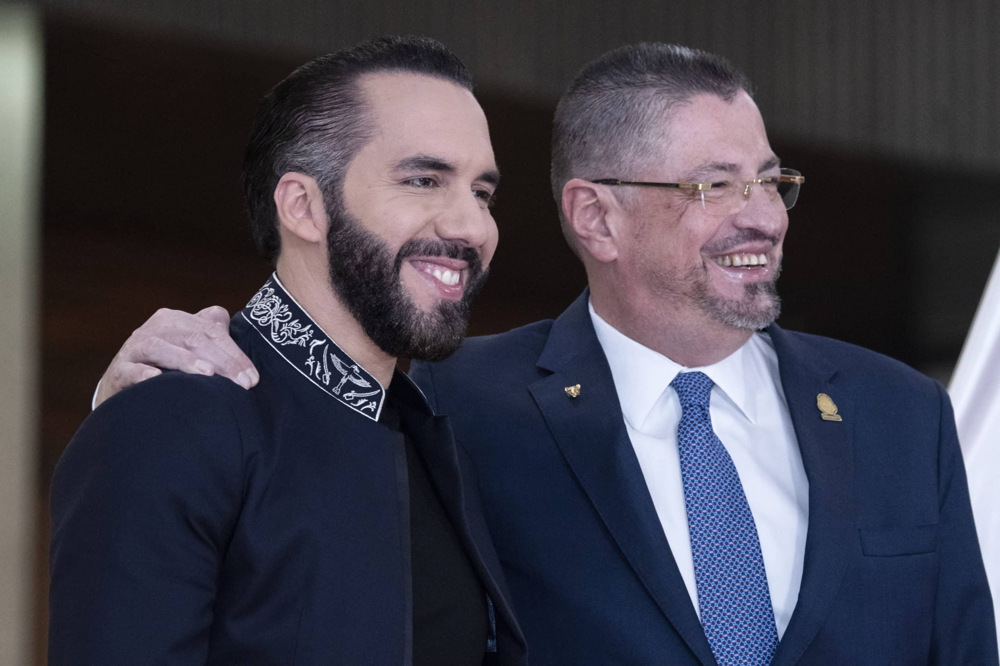

Sucesos
Solidaridad Centroamericana: Presidente de El Salvador envía ayuda a Costa Rica tras paso del huracán Rafael
San José, 16 de noviembre de 2024
En un acto de solidaridad, el presidente de El Salvador, Nayib Bukele, ha enviado un contingente de ayuda humanitaria a Costa Rica para asistir a los afectados por el devastador huracán Rafael. La tormenta dejó a miles de personas damnificadas en varias provincias costarricenses, con severas inundaciones y deslizamientos que arrasaron viviendas y colapsaron infraestructuras clave. El equipo salvadoreño, compuesto por 300 rescatistas y personal médico, llegó con insumos médicos, alimentos y equipos de rescate. Trabajando junto a las autoridades costarricenses, los especialistas han coordinado la evacuación de familias y la entrega de víveres en zonas de difícil acceso. Clínicas temporales han sido establecidas en albergues, donde el equipo de salud brinda atención de primera respuesta a quienes lo necesitan. El presidente Bukele expresó que esta ayuda es una muestra de los lazos entre las naciones centroamericanas en momentos de adversidad. La respuesta rápida y el apoyo del gobierno salvadoreño han sido bien recibidos en Costa Rica, fortaleciendo los lazos diplomáticos entre ambos países y demostrando el espíritu de cooperación en la región.